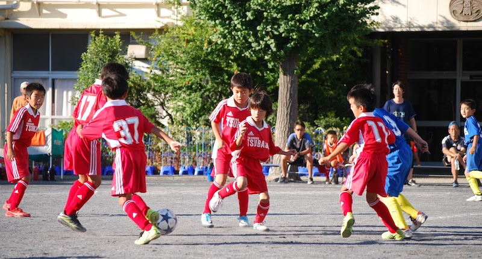

<!-- ■■■■■■■■■■■■■■ タイムライン ■■■■■■■■■■■■■■ -->
<ons-page>
	<!-- ツールバー -->
  <ons-toolbar class="navbar">
    <div class="left">
      <ons-toolbar-button onclick="fn.openMenu()">
        <ons-icon icon="fa-bars" size="28px"></ons-icon>
      </ons-toolbar-button>
      <ons-toolbar-button onclick="fn.openPage('calendar.html')">
        <ons-icon icon="fa-calendar" size="24px" class="mb-5"></ons-icon>
      </ons-toolbar-button>
    </div>
    <div class="toolbar__right mr-5">
      <ons-toolbar-button onclick="fn.openPage('post.html','lift');">
        <ons-icon icon="fa-plus" size="28px"></ons-icon>
      </ons-toolbar-button>
      <ons-toolbar-button onclick="alert('動画アップロード画面')">
        <ons-icon icon="fa-cloud-upload" size="28px"></ons-icon>
      </ons-toolbar-button>
    </div>
  </ons-toolbar>
	<!-- メインコンテンツ -->
	<ons-list>
		<ons-list-item tappable>
		  <div class="entry_title_row">
		    <p class="entry_title">3/11(日)練習場所変更</p>
		    <p class="updated_at">3.10 15:39　片岡瑛太(父)</p>
		  </div>
		  <div class="entry_content">
		  	<span>3/11(日)の練習場所を変更いたします。<br>
		  	土手AM　→　日吉南PM<br><br>よろしくお願いします。<br>
		  	</span>
		  </div>
		  <div class="responsebar">
		    <ons-icon icon="fa-heart-o" class="heart"></ons-icon>
		    <span class="heart-count">1</span>
		    <ons-icon icon="fa-comment" class="comment"></ons-icon>
		    <span class="comment-count">0</span>
		    <ons-icon icon="fa-angle-down" class="comment-toggle"></ons-icon>
		  </div>
		</ons-list-item>
		
		<ons-list-item tappable>
		  <div class="entry_title_row">
		  	<p class="entry_title">TRM vs 太尾SC</p>
		    <p class="updated_at">3.8 8:22　片岡瑛太(父)</p>
		  </div>
		  <div>
		    <span class="highlight_summary">ゆうたゴール、まさとゴール、なつきセーブ</span>
		  </div>
		  <figure class="video_thumbnail">
		    
		  </figure>
		  <div class="responsebar">
		    <ons-icon icon="fa-heart" class="heart"></ons-icon>
		    <span class="heart-count">24</span>
		    <ons-icon icon="fa-comment" class="comment"></ons-icon>
		    <span class="comment-count">5</span>
		    <ons-icon icon="fa-angle-down" class="comment-toggle"></ons-icon>
		  </div>
		</ons-list-item>
		
		<ons-list-item tappable>
		  <div class="entry_title_row">
		    <p class="entry_title">3/4（日）送り出し会＠綱島東小</p>
        <p class="updated_at">3.2 20:54　片岡瑛太(父)</p>
		  </div>
		  <div class="entry_content">
		  	<span>
		  		出欠確認を行います。<br>
		  		お忙しい所恐縮ですが<br>
		  		早急にアンケート回答をお願い致します。<br>
		  		締切2/26（月）<br>
		  		..........
		  	</span>
		  </div>
		  <div class="responsebar">
		    <ons-icon icon="fa-heart-o" class="heart"></ons-icon>
		    <span class="heart-count">0</span>
		    <ons-icon icon="fa-comment" class="comment"></ons-icon>
		    <span class="comment-count">10</span>
		    <ons-icon icon="fa-angle-down" class="comment-toggle"></ons-icon>
		  </div>
		</ons-list-item>
	</ons-list>
</ons-page>
